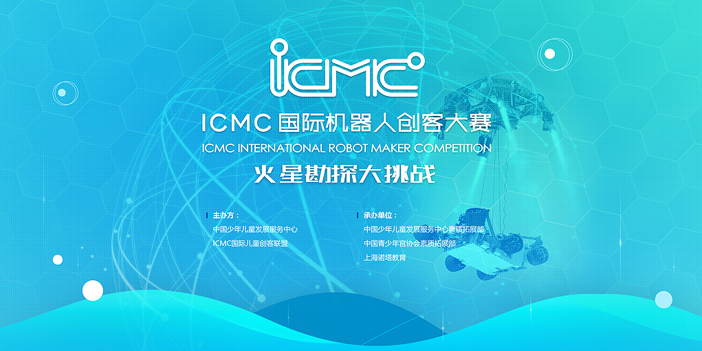

2017ICMC国际机器人创客大赛又将拉开战幕。ICMC是由ICMC国际儿童创客联盟、中国少科院创客空间联合举办的全国范围内开展的校外机器人创新活动。
2015年创办至今，以亚洲最大的上海科技馆为基地，以独特的赛题设计和国际化的赛事管理迅速发展，已经成长为国内最具影响力少年儿童科技创展示交流平台。

主办单位：
ICMC国际儿童创客联盟
中国少科院创客空间
承办单位：
上海诺塔教育
比赛地点：上海科技馆
比赛时间：12月9-10日
1
2017ICMC主题：火星勘探大挑战

2017
火星是个神奇的星球，是目前为止地球之外最适合人类生存的星球，火星上还有很多宝贵的矿产。目前，已经有多个国家向火星派出了探测器，并计划在火星建立基地。这次比赛，我们将让你化身为一位火星基地的工程师，看看你能不能很好的完成这些艰巨的任务，成为一名出色的火星勘探专家！
参赛对象：
3-12岁 各乐高机器人机构学员
比赛形式：
采用单人赛形式（每位选手只能参加一个项目）
ICMC-JR组3-4周岁：废料搬运任务
任务说明：
参赛选手使用比赛现场提供的三辆乐高小车改造成运输车，将矿物废料从始发区运输到目的地。
评分总则：总限时5分钟。从搭建开始，每用时一秒扣1分。每个完全成功进入目标区的车上，每块废料得10分。运输过程中每块掉落下来的废料，每块扣10分。


ICMC-机械组5-6周岁：风机紧急维修任务
任务说明：参赛选手在比赛现场的基础结构上，使用“零件库”里的零件对风机进行维修，实现转动摇柄时，动力正常传递，扇叶能够转动。
评分总则：总限时10分钟。成功完成任务后，按用时用时长短进行排名。


ICMC-动力组6-7周岁：全地形勘探车任务
任务说明：参赛选手必须现场搭建机器，搭建用时不得超过15分钟。搭建完成后，参赛选手启动机器，参赛机器从出发区翻越障碍，然后完全进入终点区。每场比赛参赛选手有三次机会将机器从出发区开启，成绩最佳的一次计入最终成绩。
评分总则：搭建限时15分钟。启动出发后，每前进1厘米得1分，前进过程中用时每0.1秒减1分。三次出发取成绩最好的一次。按总分排名。


ICMC-智能组7-12周岁：矿石智能运输任务
任务说明：机器人需要从出发区出发，将矿石（乒乓球）从初始区筐内运输到目的地框内（运输形式不限），每场比赛机器人有二次从出发区出发的机会，每次限时3分钟。
评分总则：机器人及程序可在赛前制作好。每次启动后，限时3分钟，成功进入目的地筐内的矿石每块得1分，过程中掉在筐外的矿石每块减1分。二次出发，取成绩好的一次，按总分排名。


2
奖项设立

一等奖：授予奖状证书+奖牌
二等奖：授予奖状证书+奖牌
三等奖：授予奖状证书+奖牌
优胜奖：授予奖状证书
3
赛场设置
上海科技馆（6号门为比赛专用入口，凭参赛证进入）

- 上海科技馆为亚洲最大科教基地
- 世界十大最受欢迎博物馆
4
往届赛事回顾


5
赛事&报名详情
比赛日程
报名截止日期：2017年11月25日（如满额将提前截止）
比赛日：2017年12月9~10日（星期六、日）
成绩公布：2017年12月16日
奖状发放：2017年12月23日
参赛费用
组织管理费：360元/选手
含比赛当天完赛后一大一小进入科技馆参观
每位参赛选手最多可有一位陪同家长进入赛场
参赛机构教师凭赛事工作证进入赛场
参赛报名办法
本次比赛实行总体规模控制，满额将提前截止报名
请参赛学员尽快与中心老师确认报名事项！
本届ICMC机器人创客大赛，以活泼生动的项目和创新的比赛形式，权威专业的评选流程，给广大机器人学员一个展现创造力的舞台，获得成长的荣誉，并对未来世界充满自信与激情。
我们很高兴能够邀请您来参与本届比赛活动，一起努力把中国儿童科技教育推向更高的水平。
主办单位：
ICDU国际儿童创客联盟
中国少科院创客空间
 微信咨询：CoCo老师
微信咨询：CoCo老师
组委电话：021-31038590（9:00-19:00）
组委地址：上海市锦延路329号（上海科技馆南侧）
www.ICMC100.com
2017ICMC机器人创客大赛组委会